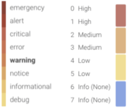

Events
The Sysdig Monitor Events module displays a comprehensive and unified list of events, both monitoring and security, that have occurred within the environment, as a live events feed. The feed displays events created by triggered alerts, pulled from infrastructure services, initiated by Sysdig Security such as policy and image scanning, or defined by users, and allows users to review, track, and resolve issues. Each event is enriched with rich metadata and the entire relationship within the system under purview is built when searched for events. With a unified Event stream, Sysdig Monitor eliminates the need for standalone tools for security and monitoring alerts.
Learn more about Sysdig Monitor Events in the following sections:
Event Types
There are four primary types of events displayed in the events feed: alert events, infrastructure events, security events, and custom events.
Alert Events
Alert events are triggered by user-configured alerts. For more information on configuring alerts, refer to the Sysdig Monitor [old]Alerts documentation.
Infrastructure Events
Events can be collected from supported services within the production environment. The Sysdig agent automatically discovers these services and is configured to collect event data for a select group of events by default. Additional events can be added to the list by configuring the dragent.yaml file.
Sysdig currently supports event monitoring for the following infrastructure services:
Docker
Kubernetes
Events marked with * are enabled by default. For more information on configuring additional infrastructure events, refer to the Enable/Disable Event Data.
Docker Events
The following Docker events are supported.
docker:
container:
- attach # Container Attached (information)
- commit # Container Committed (information)
- copy # Container Copied (information)
- create # Container Created (information)
- destroy # Container Destroyed (warning)
- die # Container Died (warning)
- exec_create # Container Exec Created (information)
- exec_start # Container Exec Started (information)
- export # Container Exported (information)
- kill # Container Killed (warning)*
- oom # Container Out of Memory (warning)*
- pause # Container Paused (information)
- rename # Container Renamed (information)
- resize # Container Resized (information)
- restart # Container Restarted (warning)
- start # Container Started (information)
- stop # Container Stopped (information)
- top # Container Top (information)
- unpause # Container Unpaused (information)
- update # Container Updated (information)
image:
- delete # Image Deleted (information)
- import # Image Imported (information)
- pull # Image Pulled (information)
- push # Image Pushed (information)
- tag # Image Tagged (information)
- untag # Image Untaged (information)
volume:
- create # Volume Created (information)
- mount # Volume Mounted (information)
- unmount # Volume Unmounted (information)
- destroy # Volume Destroyed (information)
network:
- create # Network Created (information)
- connect # Network Connected (information)
- disconnect # Network Disconnected (information)
- destroy # Network Destroyed (information)Kubernetes Events
The following Kubernetes events are supported.
kubernetes:
node:
- TerminatedAllPods # Terminated All Pods (information)
- RegisteredNode # Node Registered (information)*
- RemovingNode # Removing Node (information)*
- DeletingNode # Deleting Node (information)*
- DeletingAllPods # Deleting All Pods (information)
- TerminatingEvictedPod # Terminating Evicted Pod (information)*
- NodeReady # Node Ready (information)*
- NodeNotReady # Node not Ready (information)*
- NodeSchedulable # Node is Schedulable (information)*
- NodeNotSchedulable # Node is not Schedulable (information)*
- CIDRNotAvailable # CIDR not Available (information)*
- CIDRAssignmentFailed # CIDR Assignment Failed (information)*
- Starting # Starting Kubelet (information)*
- KubeletSetupFailed # Kubelet Setup Failed (warning)*
- FailedMount # Volume Mount Failed (warning)*
- NodeSelectorMismatching # Node Selector Mismatch (warning)*
- InsufficientFreeCPU # Insufficient Free CPU (warning)*
- InsufficientFreeMemory # Insufficient Free Mem (warning)*
- OutOfDisk # Out of Disk (information)*
- HostNetworkNotSupported # Host Ntw not Supported (warning)*
- NilShaper # Undefined Shaper (warning)*
- Rebooted # Node Rebooted (warning)*
- NodeHasSufficientDisk # Node Has Sufficient Disk (information)*
- NodeOutOfDisk # Node Out of Disk Space (information)*
- InvalidDiskCapacity # Invalid Disk Capacity (warning)*
- FreeDiskSpaceFailed # Free Disk Space Failed (warning)*
pod:
- Pulling # Pulling Container Image (information)
- Pulled # Ctr Img Pulled (information)
- Failed # Ctr Img Pull/Create/Start Fail (warning)*
- InspectFailed # Ctr Img Inspect Failed (warning)*
- ErrImageNeverPull # Ctr Img NeverPull Policy Violate (warning)*
- BackOff # Back Off Ctr Start, Image Pull (warning)
- Created # Container Created (information)
- Started # Container Started (information)
- Killing # Killing Container (information)*
- Unhealthy # Container Unhealthy (warning)
- FailedSync # Pod Sync Failed (warning)
- FailedValidation # Failed Pod Config Validation (warning)
- OutOfDisk # Out of Disk (information)*
- HostPortConflict # Host/Port Conflict (warning)*
replicationController:
- SuccessfulCreate # Pod Created (information)*
- FailedCreate # Pod Create Failed (warning)*
- SuccessfulDelete # Pod Deleted (information)*
- FailedDelete # Pod Delete Failed (warning)*Security Events
Events module displays events initiated by Sysdig Secure. You will be immediately be notified of policy violations and image scanning results with a live stream of events. Sysdig Monitor supports the following types of Security events:
Scanning
Scanning events notify you for vulnerabilities, secrets, license violations, and so on. For example, events are generated when unscanned images are added to the environment, images fail a policy evaluation, scanning results change, or CVEs are updated. For more information, see Image Scanning.
Policy
Policies events are triggered when a policy is violated. For example, events are triggered for unauthorized execution of specific commands and processes, read/write operations, system calls, or downloading blacklisted container images. For more information, see Policy Events.
Custom Events
Additional events can be collected by the Sysdig agent and displayed in the Events module, but require more comprehensive configuration steps. These custom events can be integrated via:
The Sysdig Monitor Slackbot
Python scripts (either pre-built by Sysdig or user-created)
A CURL request
For brief sample scripts regarding configuring other custom events, refer to the Custom Events. For more information, contact Sysdig Support.
Custom Events
Sysdig Monitor can ingest any custom event created, including code deploys, auto-scaling activities, and business level actions. These events will be automatically overlayed on charts and graphs for easy correlation of all performance data. The sections below outline the different ways custom events can be sent to Sysdig Monitor.
Application Integrations
Sysdig Monitor supports event integrations with certain applications by default. The Sysdig agent will automatically discover these services and begin collecting event data from them. For more information, refer to the Events documentation.
Sysdig Monitor Slackbot
Sysdigbot, the Sysdig Monitor Slackbot, allows users to post custom events directly to the Sysdig Cloud through chats with a Slack bot.
Prebuilt Python Script
The Sysdig python script provides a way to send events to Sysdig Monitor directly from the command line, using the following command structure:
python post_event.py SYSDIG_TOKEN NAME [-d DESCRIPTION] [-s SEVERITY] [-c SCOPE] [-t TAGS] [-h]
For more information, refer to the Sysdig Github repository.
Python Sample Client
The Sysdig Monitor python client acts as a wrapper around the Sysdig Monitor REST API, exposing most of the REST API functionality to provide an easy to use and install python interface. The post_event() function can be used to send events to Sysdig Monitor from any custom script. An example script is shown below:
import os import sys sys.path.insert(0, os.path.join(os.path.dirname(os.path.realpath(sys.argv[0])), '..')) from sdcclient import SdcClient # Parse arguments sdc_token = sys.argv[1] name = sys.argv[2] # Instantiate the SDC client sdclient = SdcClient(SDC_TOKEN) # Post the event using post_event(self, name, description=None, severity=None, event_filter=None, tags=None) res = sdclient.post_event(NAME)
Curl Sample Client
The Sysdig Monitor REST API offers the full functionality of the Sysdig Monitor app over API, allowing custom events to be sent directly to the Sysdig Cloud over the REST API. The example below is a curl request:
#!/bin/bash
SDC_ACCESS_TOKEN='626abc7-YOUR-TOKEN-HERE-3a3ghj432'
ENDPOINT='app.sysdigcloud.com'
curl -X POST -s 'https://'"${ENDPOINT}"'/api/events' \
-H 'Content-Type: application/json; charset=UTF-8' \
-H 'Accept: application/json, text/javascript, */*; q=0.01' \
-H 'Authorization: Bearer '"${SDC_ACCESS_TOKEN}"'' \
--data-binary '{"event":{"name":"Jenkins - start wordpress deploy","description":"deploy","severity":"6","tags":{"build":"89"}}}' --compressed
sleep 5sSee also Enable/Disable Event Data.
Severity and Status
Event Severity
Event severity is broken down into four categories in the Sysdig Monitor UI, to better visualize issue priority, and allow for easier filtering practices.
Note
Scripts that used the former severity values (0-7) will continue to work as expected, as the new categories are simplified groupings of those values.
The image below outlines the severity value breakdown:
|  |
Event Status
There are two primary event states: triggered, and resolved. In addition, there are two additional statuses available to improve filtering practices:
Note
For more information on filtering the Events feed, refer to the Filter Events section.
Event Status | Description |
|---|---|
Triggered | The circumstances that triggered the event remain in place (for example, the node remains down). |
Resolved | The circumstances that triggered the event are no longer in place (for example, the metric value has returned to within a normal range). |
Acknowledged | Manual label to assist in further filtering the events feed. NoteThe acknowledged label is a purely visual marker, and does not reflect the current state (triggered/resolved) of the event. Custom events cannot be marked as acknowledged. |
Unacknowledged | Manual label to assist in further filtering the events feed. NoteAll events are marked as unacknowledged by default. |
Event Scope
By default, Events feed displays events from the entire environment. However, the feed can be configured to only show events from a particular scope within that environment. The scope of the event feeds can be configured by labels.
Labels refer to a set of meaningful key-value pair (whitelist) that is defined by Sysdig Monitor. As a user, you have the ability to configure the whitelist. For example, if you are using ECS and have custom container labels you have defined, you have the ability to configure the whitelist and add the labels you need. Once done, all the infrastructure events related to containers are enriched with these labels and the event scope will display associated metadata.
Note
For more information on scoping, refer to the Grouping, Scoping, and Segmenting Metrics documentation.
Configure Event Scope
To configure the events feed scope:
From the
Eventsmodule, click theEdit Scopelink.
Open the top-level drop-down menu.
Select the desired label, either by scrolling through the list, or by typing the name/partial name into the search bar, and selecting it.

Open the
Operatordrop-down menu, and select the relevant option.Open the
Valuedrop-down menu, and select the relevant options.Optional: Open the next level drop-down menu, and repeat steps 3-5.

Optional: Repeat step 6 for each additional layer of scope required.
Note
Individual layers of the scope can be removed if necessary, by clicking the
Delete(x) icon beside the relevant layer.Click the
Applybutton to save the new scope.
Reset the Environment Scope
To reset the scope to the entire environment:
From the Events module, click the
Edit Scopelink.Click the
Clear Alllink.
Click the
Applybutton to save the changes.
Configure Event Alerts
Event alerts can be created (for custom events) and configured (for alert events, and custom events with a previously created alert) from the Event Details panel:
From the Events module, select the event from the feed to open the
Event Detailspanel.Open the
Configure Alertpanel:For existing alerts, click the
Edit Alertlink.For new alerts, click the
Create Alert from Eventbutton.
Configure the alert as necessary. For more information on configuring alerts, refer to the [old]Alerts documentation.
Note
New alerts will be auto-filled with information from the custom event.
Click the
Create buttonfor new alerts, or theSavebutton for existing alerts.
Filtering and Searching Events
Filter Events
The events feed can be filtered in multiple ways, to drill-down into the environment's history and refine the events displayed. The feed can be filtered by severity, type, and/or status. Examples of each are shown below.
The example below shows only high and medium severity events:
The example below shows only Kubernetes events:
 |
The example below shows only events that are Unacknowledged:
Note
The Acknowledged label is a purely visual marker, and does not reflect the current state (triggered/resolved) of the event. By default, all events are Unacknowledged.
The example below shows medium severity Alert events that remain Triggered, but have been acknowledged:
Search for an Event
The event feeds can be searched by using the search icon in the top bar:
Review Events
Events can be reviewed in detail by clicking on the event listing in the feed:
To review the environment at the time of the event in detail, click the Explore button to navigate to the Explore module. The Explore module will automatically drill-down to the impacted environment objects.
The Event Details Panel
The Event Details panel contains detailed information about the event. This information is different, depending on whether the event is an Alert event or a Custom event.
Alert Events
The example below is of an Alert event:
Metadata | Description |
|---|---|
Event ID | The unique ID of the event. |
Severity | The severity of the event (High, Medium, Low, Info). |
State | The current state of the event (Triggered, Resolved) |
Duration | The length of time the event lasted. |
Acknowledged | Whether the event has been acknowledged or not. |
Trigger | The cause of the event (for example, the metric that exceeded the defined range, and the value it reached). |
Entity | The entity on which the event occurred. |
Start Time | The date and time the event started. |
End Time | The date and time the event ended. |
Alert Name | The name of the alert that was triggered. |
Type | The type of alert. |
Metrics | The metric/s that were affected. |
Trigger Condition | The condition that was met to trigger the alert. |
Scope | The scope of the alert. |
Segment | The segmentation applied to the alert. |
Note
To configure the alert that created the event, click the Edit Alert link in the Event Details panel. For more information about alerts, refer to the [old]Alerts documentation.
Security Events
Policy
The example shows an event notifying potentially unauthorized terminal shell in a container. For more information on Policy alerts, see Policy Events Details.
Metadata | Description |
|---|---|
Event ID | The unique ID of the event. |
Severity | The severity of the event (High, Medium, Low, Info). |
Date / Time | The date and time the event occurred. |
Host | The hostname and physical address (MAC) |
Container | The container name, unique identifier, and image. |
Summary | A detailed description of what occurred. |
Scanning
The example is a high severity event alerting a change in the scan result of an elasticsearch image on Quay. For more information on Scanning, see Scanning Alerts.
 |
Metadata | Description |
|---|---|
Event ID | The unique ID of the event. |
Severity | The severity of the event (High, Medium, Low, Info). |
Date / Time | The date and time the event occurred. |
Image Registry | The repository where the image resides (for example, Quay). |
Tag | The image name associated with the image. |
Image ID | The unique identifier of the image. |
Digest | A content-addressable identifier which contains the SHA256 hash of the image's JSON configuration object. |
Infrastructure and Custom Events
Infrastructure and custom events display the same set of information in the Event Details panel. The example below is a Docker event:
Metadata | Description |
|---|---|
Event ID | The unique ID of the event. |
Severity | The severity of the event (High, Medium, Low, Info). |
Date / Time | The date and time the event occurred. |
Source | The source of the event (for example, Docker). |
Scope | The scope of the event. |
Description | A detailed description of what occurred. |